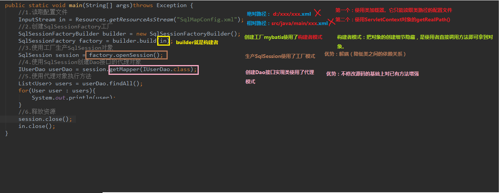

一、什么是框架
- 概念
- 框架是整个或部分系统的可重用设计，表现为一组抽象构件及构件实例间交互的方法；
- 框架是可被应用开发者定制的应用骨架。前者是从应用方面而后者是从目的方面给出的定义
- 框架其实就是某种应用的半成品，就是一组组件，供你选用完成你自己的系统

二、MyBatis框架
- 概念
- mybatis是一个优秀的基于 java 的持久层框架，它内部封装了 jdbc，使开发者只需要关注 sql 语句本身，
- mybatis通过 xml 或注解的方式将要执行的各种statement配置起来，并通过java对象和statement 中sql 的动态参数进行映射生成最终执行的 sql 语句，最后由 mybatis 框架执行 sql 并将结果映射为 java 对象并返回。
- 采用 ORM 思想解决了实体和数据库映射的问题，对 jdbc进行了封装，屏蔽了 jdbc api 底层访问细节（ORM就是Object Relational Mapping:对象关系映射）
- 实体类的属性和数据库表中的 字段保持一致
- 入门
- 第一步：创建maven工程并导入坐标
- 第二步：创建实体类和dao的接口
- 第三步：创建mybatis的主配置文件：SqlMapConifg.xml
<?xml version="1.0" encoding="UTF-8"?>
<!DOCTYPE configuration
PUBLIC "-//mybatis.org//DTD Config 3.0//EN"
"http://mybatis.org/dtd/mybatis-3-config.dtd">
<!--mybatis的主配置文件-->
<configuration>
<!--环境配置-->
<environments default="mysql">
<!--配置mysql环境-->
<environment id="mysql">
<!--配置事务的类型-->
<transactionManager type="JDBC"></transactionManager>
<!--配置数据源（数据库连接池）-->
<dataSource type="POOLED">
<!--配置连接数据库的四个基本信息-->
<property name="driver" value="com.mysql.jdbc.Driver"></property>
<property name="url" value="jdbc:mysql://localhost:3306/eesy_mybatis"></property>
<property name="username" value="root"></property>
<property name="password" value="root"></property>
</dataSource>
</environment>
</environments>
<!--指定映射配置文件的位置，映射配置文件指的是每个dao独立的 配置文件-->
<mappers>
<mapper resource="vaught/dao/UserDao.xml"></mapper>
</mappers>
</configuration>
- 第四步：创建映射配置文件：UserDao.xml
<?xml version="1.0" encoding="UTF-8"?>
<!DOCTYPE mapper
PUBLIC "-//mybatis.org//DTD Mapper 3.0//EN"
"http://mybatis.org/dtd/mybatis-3-mapper.dtd">
<mapper namespace="vaught.dao.UserDao">
<!--配置查询所有-->
<select id="findAll">
select * from User
</select>
</mapper>
- 环境搭建的注意事项：
- 创建UserDao.xml和UserDao.java时名称是为了和以前的知识保持一致，在mybatis中它把持久层的操作接口名称和映射文件也叫做：Mapper,所以，UserDao和UserMapper是一样的
- 在idea中创建目录的时候，它和包是不一样的，包在创建时，com.itheima.dao它是三级结构，目录在创建时：com,itheima.dao是一级目录
- mybatis的映射配置文件必须和dao接口的包接口相同
- 映射配置文件的mapper标签namespace属性取值必须是dao接口的全限定类名
- 映射配置文件的操作配置，id属性的取值必须是dao接口的方法名
public static void main(String[] args) throws IOException {
//1.加载SqlMapConfig配置文件
InputStream is = Resources.getResourceAsStream("SqlMapConfig.xml");
//2.创建工厂模式对象
SqlSessionFactoryBuilder builder = new SqlSessionFactoryBuilder();
SqlSessionFactory factory = builder.build(is);
//3.使用工厂生产SqlSession对象
SqlSession sqlSession = factory.openSession();
//4.使用SqlSession创建dao接口代理对象
UserDao userDao = sqlSession.getMapper(UserDao.class);
//5.使用代理对象执行方法
List<User> users = userDao.findAll();
for (User user : users) {
System.out.println(user);
}
//6.释放资源
sqlSession.close();
is.close();
}
每个对像详解
1.读配置文件的方法：
1.使用类加载器，它只能读取类路径的配置文件
2.使用ServletContext对象的getRealPath()
2.创建工厂使用构建者模式
1.构建者模式：把对象的创建细节隐藏，使使用者直接调用方法即可拿到对象
3.创建dao实现类使用了代理模式
1.不修改源码的基础上对已有方法增强
注意事项：在映射配置中指定结果集要封装的类名

- 自定义Mybatis分析
- mybatis在使用代理dao的方式实现增删改查时做什么事情
- 创建代理对象
- 在代理对象中调用selectList
- 流程解析

- 自定义mybatis能通过入门案例看到的类
视频13